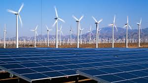
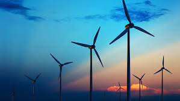
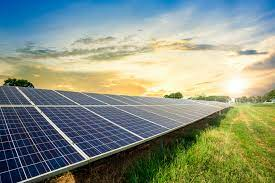
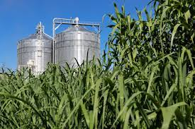
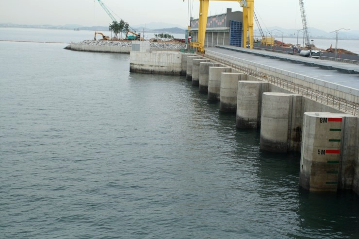
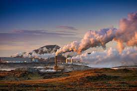

youtube channel: ADAMMINECRAFTADAM.
renewable energy is energy derived from natural sources that are replenished at a higher rate than they are consumed. Sunlight and wind, for example, are such sources that are constantly being replenished.

Wind is used to produce electricity by converting the kinetic energy of air in motion into electricity. In modern wind turbines, wind rotates the rotor blades, which convert kinetic energy into rotational energy.
solar energy is any type of energy generated by the sun. Solar energy is created by nuclear fusion that takes place in the sun.
hydropower, or hydroelectric power, is one of the oldest and largest sources of renewable energy, which uses the natural flow of moving water to generate electricity.

biomass is renewable organic material that comes from plants and animals. Biomass contains stored chemical energy from the sun that is produced by plants through photosynthesis. Biomass can be burned directly for heat or converted to liquid and gaseous fuels through various processes.

Tidal energy is a form of power produced by the natural rise and fall of tides caused by the gravitational interaction between Earth, the sun, and the moon. Tidal currents with sufficient energy for harvesting occur when water passes through a constriction, causing the water to move faster.

Geothermal energy is heat energy from the earth—Geo (earth) + thermal (heat). Geothermal resources are reservoirs of hot water that exist or are humanmade at varying temperatures and depths below the earth's surface.
